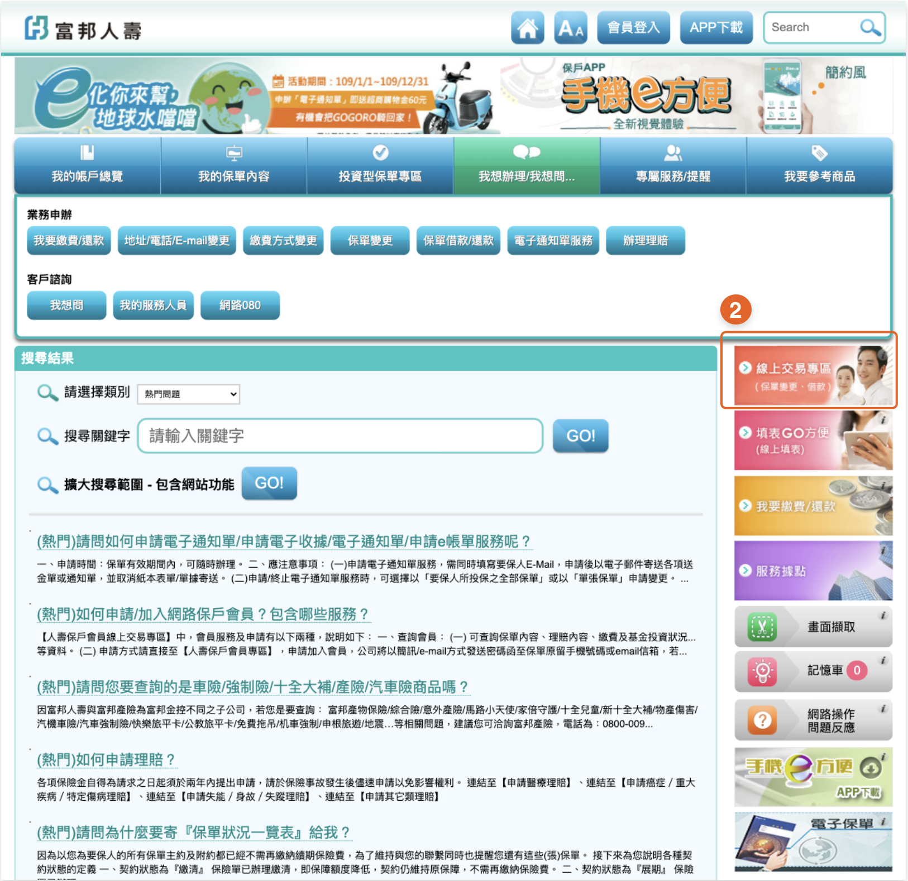
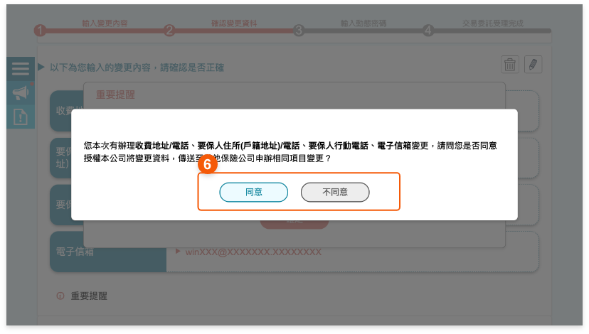

變更流程
多張保單地址/電話/E-mail變更
步驟 1 :
由 [富邦人壽官網] ， 點選『保戶會員專區』登入。
由 [手機e方便] ， 點選『保戶會員專區』登入。


步驟 2 :
點選『線上交易』
★保戶需先申請成為交易會員方可於網路 辦理變更。


步驟 3 :
點選後進入『多張保單地址/電話/E-mail變更』作業。


步驟 4 :
確認顯示的行動電話及電子信箱是否為最新資料，若需修改請點選  修改。
修改。


步驟 5 :
請點選  即可輸入欲變更之內容。
即可輸入欲變更之內容。


步驟 6 :
1
2
3
2
3
確認變更內容
點選 即可刪除此項目
即可刪除此項目
點選 可回此變更項目輸入修改變更內容
可回此變更項目輸入修改變更內容
點選
即可刪除此項目點選
可回此變更項目輸入修改變更內容


步驟 7 :
請審閱重要提醒，確認無誤後請勾選
□ 我已了解並同意後，點選確認進入下一步


步驟 8 :
請確認本次辦理變更資料，是否傳送至其他保險公司申辦相同變更項目。


步驟 9 :
如同意傳送至其他保險公司，請選擇欲傳送之保險公司(可複選)。
★僅提供有加入試辦之保險公司，請勾選有該公司保單之保險公司。

步驟 10 :
請審閱保全申請轉送暨個人資料告知事項，審閱完成後，請點選 □ 本人已審閱蒐集、處理及利用個人資料告知事項，如取消轉送，請點選『不同意傳送』，可回至確認是否同意轉送頁重新選擇。


步驟 11 :
輸入動態密碼，未收到動態密碼，可點選重新發送動態密碼。


步驟 12 :
委託受理完成，可點選『列印內容』。產出加密之PDF檔，密碼為要保人身分證字號，第一個英文字母大寫。